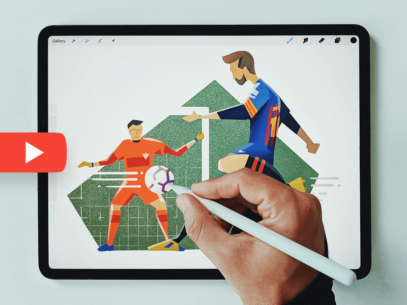

JYP's
resume
关于
技能
项目
留言
联系方式
邮箱:
896986794@qq.com
手机号:
18621829157
关于我
蒋毅鹏
前端工程师
年龄
23
学校
上海海洋大学
邮箱
896986794@qq.com
手机
12312345678
点击下载简历PDF
技能
html&CSS
JavaScript
JQUERY
VUE
REACT
HTTP
项目经历
天天爱记账APP
关键词:
Vue
Vue CLI
Vuex
VueRouter
TypeScript
天天爱记账是一款极简风格的记账应用，同时基于Vue框架，VueRouter，Vuex，TypeScript的单页面应用，主要功能有：
1.根据用户需求点击不同标签进行记账；
2.用户可以随时新增标签满足记账需求；
3.可以查看记账汇总以及近期记账情况。
仿CNODE社区
关键词:
Vue
Vue CLI
Vuex
基于Vue框架以及CNODE社区API开发的cnode社区，主要功能有：
1.用户通过点击列表中的文章可以跳转文章详情；
2.在文章详情页点击用户头像可以跳转用户详情页。
番茄工作法小程序
关键词:
小程序
基于原生微信小程序以及番茄工作法原理，开发的一个帮助用户解决拖延症，提高工作效率的小程序，主要功能有：
1.用户通过点击创建任务后记录想完成的事项；
2.通过计时按钮帮助用户倒计时以及在倒计时结束时可以选择再来一轮或结束；
3.在“我的”界面能查看到已经完成的事项。
键盘型导航网页
关键词:
原生JavaScript
CSS3
HTML5
基于原生JavaScript以及localStorage本地存储功能，动态生成一个类键盘的导航网页，主要功能有：
1.根据用户按键跳转相应按键所对应的网站；
2.可以根据用户需要更改按键所对应的的网站；
3.主流搜索引擎搜索功能。
纯CSS画皮卡丘
关键词:
jQuery
CSS3
基于jQuery，动态向style标签添加样式以及pre标签添加文本，模拟出CSS绘制皮卡丘的过程，主要功能有:
1.在显示style代码的同时绘制出相应效果；
2.能根据点击的按钮调节动画速度；
3.适配移动端。
在线简易画板

关键词:
原生JavaScript
canvas
基于原生JavaScript与canvas实现的在线画板，主要功能有：
1.根据选择的工具实现相应的功能，例如画笔、橡皮、一键清除等；
2.通过点击保存按钮将画保存到本地；
3.支持移动端。
动态简历
关键词:
原生JavaScript
LeanCloud
CSS3
HTML
基于原生JavaScript以及leancloud数据库开发的简历页面，实现了以下功能：
1.根据用户点击跳转页面对应位置；
2.在留言板进行留言的功能。
留言
请写下你的留言
用户名:
留言内容: